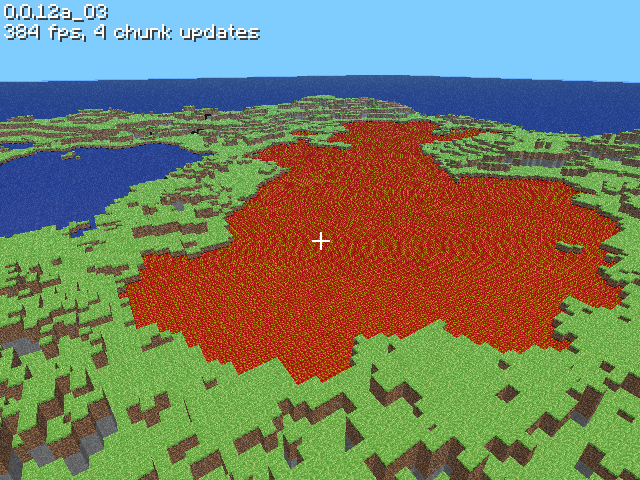

The History of Minecraft
The pre-Classic Era (From "Cave Game" to "Minecraft")
The pre-Classic Era refers to the versions of Minecraft from rd-131648 to mc-161648 created between May 13th 2009 and May 16th 2009.
Notch originally wanted to make a clone of Infiniminer and used the source code of one of his earlier games called RubyDung (the "rd-" prefix refers to RubyDung)
Notch posted about his progress in the #LWJGL IRC channel. Some people from that channel also play-tested the game.
Videos from Classic:
May 17, 2009, 16:34:37 UTC:
jwaap posts a screenshot in #TigIRC.
May 17th, 2009, 04:24:07 AM
Notch announces Minecraft to the world in a TIGForums thread.
On the post he posted:
It's an alpha version, so there might be crashes. You can read some background and insight on my blog available from the game page.
The main inspiration for this game is Infiniminer, but it's going to move in a more Dwarf Fortress way, gameplay wise. =)
The post also had an attached image:

May 17th, 2009, 05:13:32 AM
Posted by muku
May 17th, 2009, 05:17:32 AM
Posted by increpare
increpare posted a screenshot of his tower and "bridging" since sneaking was not added yet this is the best the players of the time could do.
May 17th, 2009, 13:06:25 UTC
Posted by Evil-Ville
Here's a video of a castle I made
http://www.youtube.com/watch?v=3XpSaBZchEs
Also a screenshot
May 17th, 2009, 13:41:05 UTC
Posted by jwaap
minecraft
YouTube description:
http://www.mojang.com/notch/minecraft/Commentary:
This is the oldest surviving minecraft video not uploaded by Notch.
Posted by jwaap
May 16th, 2009, 20:34:41 UTC
{kind=link}
May 17th, 2009, 11:11:09 UTC
{kind=link}
May 17th, 2009, 13:59:11 UTC
{kind=link}
May 17th, 2009, 14:18:39 UTC
{kind=link}
May 17th, 2009, 14:47:07 UTC
{kind=link}
He also shared a link to "mariominecraft awesome"
May 17th, 2009, 15:12:41 UTC
mariominecraft awesome
May 17th, 2009, 01:17:32 AM
Posted by Bood_War
Bood_war posted a screenshot of a curling structure.
May 17th, 2009, 09:12:24 AM
Posted by Navineous

May 17th, 2009, 10:24:20 AM
May 17th, 2009, 10:33:42 AM
Posted by jwaap
Jwaap shares the "minecraftcurl" video as a reply
minecraftcurl
Uploaded by jwaap/Jan Willem Nijman on May 17th 2009.
May 17th, 2009, 04:34:19 PM
Posted by vdgmprgrmr
May 17th, 2009, 08:46:41 PM
Posted by Mr. LL

May 18th, 2009, 12:13:47 AM
Posted by vdgmprgrmr


On May 18th, 2009, at 06:17:56 AM Paul Eres (also known as "RinkuHero") commented:
i think i'm the person that named this game (in irc, we kept throwing out names and you liked minecraft)
anyway, my experience with this game is that i only played it once: i dug myself really really deep into the earth in a single hole, and couldn't jump out so i got scared. it took me like half an hour to dig myself back out, and was amazed to see sunlight again. after that i was so relieved to be out of that hole and so scared of getting myself trapped in such a place again that i had to leave the game in triumph.
May 18th, 2009, 01:39:11 PM
Posted by MisterX

May 18th, 2009, 03:06:22 PM
Posted by MisterX
May 18th 2009, XX:XX:XX PM
Where Is Everyone?
Posted by mandelbrotflower
May 18th 2009, XX:XX:XX PM
Playing around in pre-alpha minecraft
Posted by ipokesnails
May 18th 2009, XX:XX:XX PM
Minecraft Alpha Gameplay
Posted by NickdeBey
May 18th 2009, XX:XX:XX PM
Minecraft - Mob Pit o' Doom
Posted by Telkir
May 19, 2009, 07:04:29 AM
Posted by Morre

http://www.x2d.org/misc/wipCastle11.png <-- changing the number gives a new screenshot
May 19, 2009, 10:46:04 AM
Posted by Zolyx
May 19, 2009, 11:38:58 AM
Posted by MisterX


May 19, 2009, 04:49:47 PM
Posted by Notch

May 19, 2009, 04:50:22 PM
Posted by vdgmprgrmr
May 19, 2009, 06:09:58 PM
Posted by MisterX
MisterX posted 3 unarchived screenshots.
May 19, 2009, 10:51:38 PM
Posted by Diggum


May 19th 2009
Posted by terribletriojoe
Minecraft Castle
May 20, 2009, 07:30:04 AM
Posted by Zolyx

May 20, 2009, 02:12:50 PM
Posted by Zolyx
May 20th 2009
Posted by Telkir
Minecraft - Lava Prison
May 20, 2009, 07:56:52 PM
Posted by lulzapricot
May 20, 2009, 10:54:43 PM
Posted by Super-Dot

May 21, 2009, 07:04:16 AM
Posted by Notch
Minecraft: Huge level, teaser of 0.0.13a
May 21, 2009, 07:55:59 AM
Posted by MisterX
Shipwrecked in Minecraft
Uploaded by Syreion on May 21st 2009.
May 21, 2009, 11:49:36 AM
Posted by Notch
I set up a channel for minecraft on irc
irc.esper.net #minecraft
There's not much going on there at the moment, so it's a great place to idle.
May 22, 2009, 10:34:43 AM
Posted by Notch
0.0.13a is up at http://www.minecraft.net/
Level saving, level loading!
May 22nd 2009, XX:XX:XX AM
Posted by 8BitLord
Temple of Minecraft
May 22nd 2009, XX:XX:XX AM
Posted by terribletriojoe
Minecraft Mob
May 22nd 2009, XX:XX:XX AM
Posted by 8BitLord
Minecraft gameplay
May 22nd 2009, XX:XX:XX AM
Posted by carlz0r
Let's Build in Minecraft!
May 22nd 2009, XX:XX:XX AM
Posted by gnomium41
minecraft mob invasion
Commentary:
Notch left a comment on the video with his Nizzotch account.
May 22nd 2009, XX:XX:XX AM
Posted by T3rminator
Minecraft Church
May 22nd 2009, XX:XX:XX AM
Posted by andystartedthefire
Minecraft 00.12a_03 Fun
May 24, 2009, 12:06:30 AM
Posted by Zolyx

May 24, 2009, XX:XX:XX AM
Posted by MrBrax
Minecraft mobs
May 24, 2009, XX:XX:XX AM
Posted by MrBrax
Oh christ
May 27, 2009, XX:XX:XX AM
Posted by ChazDragoon
Welcome to ChazLand
Uploaded by ChazDragoon on May 27th 2009.
Commentary:
Somebody recreated his build. You can find the download in the video description!
May 31, 2009, XX:XX:XX AM
Posted by Telkir
Minecraft Multiplayer - So it begins...
YouTube description:
Some video footage of the very first multiplayer test of Minecraft - so awesome it caused the server to explode, triggering a power blackout in a 50-mile radius around Notch's home!
Sorry not to have more coverage of what people were building. I was a little busy with my own traditional circular tower, and before I had chance to do a proper walkaround of what people had built, the blackout struck :(
The test lasted slightly over 30mins with a few crashes and restarts along the way - it was frantic, and incredible to see so much being built (and destroyed - silly griefers) in such a short time!
Thanks to everyone who took part, especially Notch for the continued fantastic work!
Archived Minecraft IRC logs:
| RinkuHero's logs | LWJGL IRC's logs | testvan's logs | Rotab's logs | DBN's logs | Adura's logs | Miclee's logs | DigiDoggi's logs | Uniju's logs | Scaevolus's #risucraft logs |